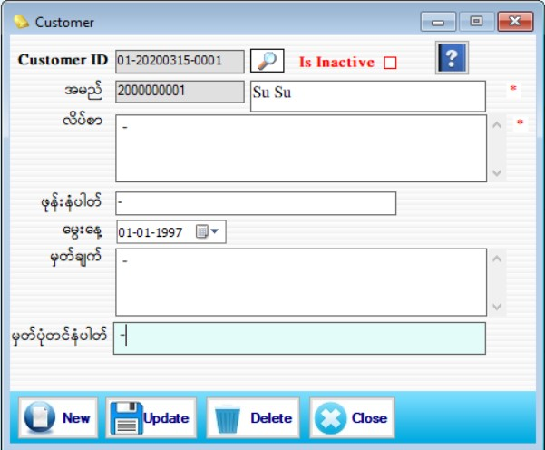

Customer Setup

- Master Setup အောက်မှ Customer Form ကိုနှိပ်ပါ။
- Customer ID အား Software မှ Auto တပ်ပေးပါသည်။ Customer ID -2017 သည် လက်ရှိရောက်နေသော Year ဖြစ်ပါသည်။ 07 သည်လက်ရှိရောက်နေသော Month ဖြစ်ပါသည်။ 31သည် လက်ရှိရောက်နေသော Day ဖြစ်ပါသည်။ 0001 သည် Serail အတိုင်း S/W မှ Auto တက်ပေးပါမည်။
- အမည် တွင် 140001 သည် Customer Code ဖြစ်ပြီး Software မှ Serial အတိုင်း Auto တပ်ပေးပါသည်။ 17 သည် ခုနှစ်ဖြစ်ပြီး 0001သည် Serial No ဖြစ်သည်။ ထို့နောက် Customer အမည်ကို မဖြစ်မနေဖြည့်စွက်ပေးရပါမည်။ လိပ်စာ ၊ ဖုန်းနံပါတ်၊ မှတ်ချက်တို့ကို ဖြည့်စွက်ပါ။ Is Inactive – အသုံးပြုသူသည် Customer တစ်ယောက်ကို Is Inactive check box on ထားပါက အရောင်းအဝယ်နှင့် Order Form များတွင် Customer ကိုရွေးချယ်ရာတွင် IsInactive လုပ်ထားသော Customer ရွေးချယ်ပါက IsInactive လုပ်ထားကြောင်း Massage Box တွေ့ရမည်ဖြစ်ပြီး ထို Customer အား အသုံးပြုခွင့်ပေးမည်မဟုတ်ပါ။
- Data များဖြည့်စွက်ပြီးပါက Save button ကိုနှိပ်ပြီးသိမ်းဆည်းရပါမည်။
- သိမ်းဆည်းပြီးသား Data များအား ပြန်လည်ကြည့်ခြင်း၊ ပြင်ဆင်ခြင်းများပြုလုပ်ချင်ပါက Customer ID ၏ဘေးတွင် ရှိသော မှန်ဘီလူး button အားနှိပ်ပြီး ပြန်လည်ကြည့်ရှုပြင်ဆင်ချင်သော Customer အားရွေးချယ်ပြီး ပြင်နိုင်ပါသည်။
- Data များကို ဖျက်ချင်လျှင် ဖျက်ချင်သော Data ကို မှန်ဘီလူး button အားနှိပ်ပြီးရှာပါ ။ ပြီးလျှင် Delete Button ကို နှိပ်ပြီး ဖျက်နိုင်ပါသည်။
- Customer အသစ်အား ထပ်မံ ထည့်သွင်းလိုပါက New Button ကိုနှိပ်ပြီး အသစ်ထည့်နိုင်ပါသည်။
- Customer Form အား အသုံးပြုပြီးပါက Close Button ကိုနှိပ်၍ ပိတ်နိုင်ပါသည်။